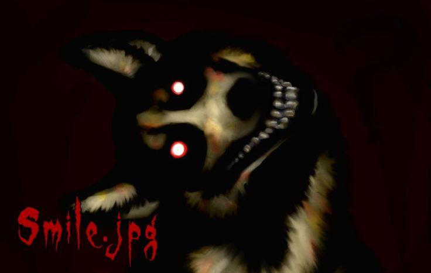
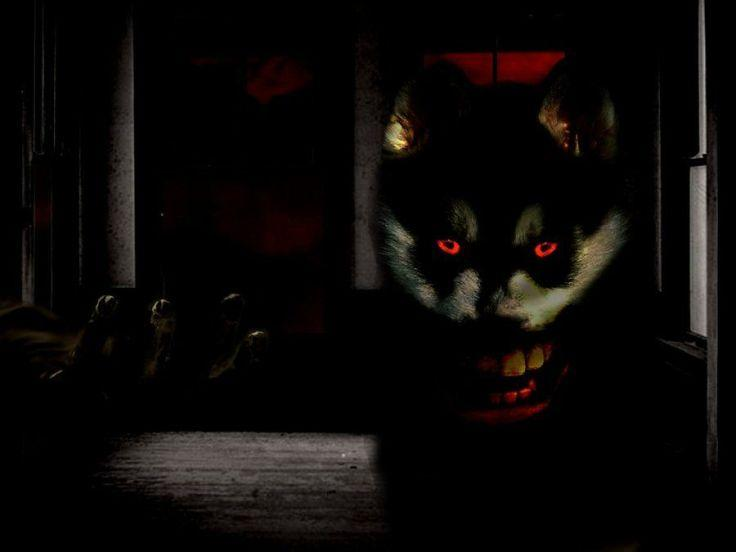
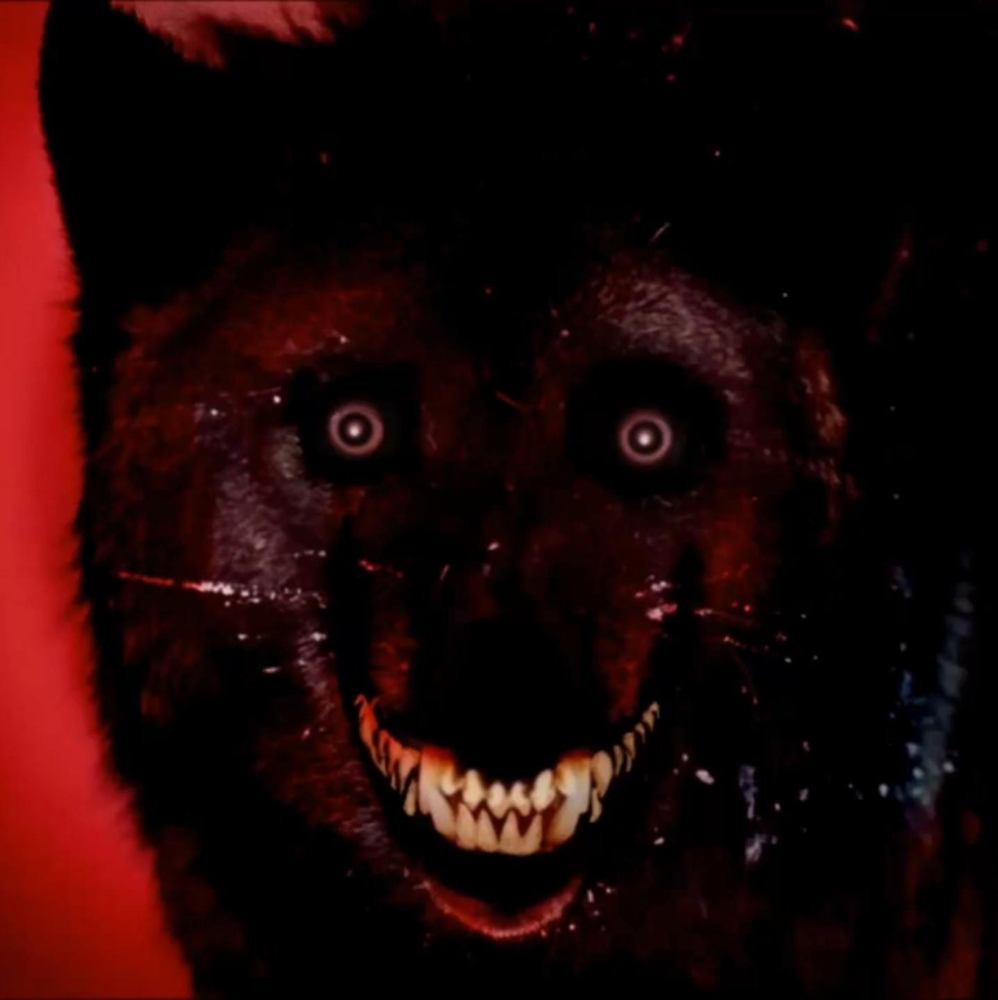
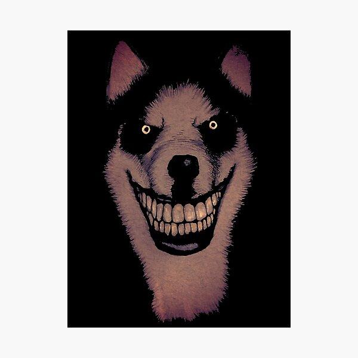

CREEPYPASTA
SMILEDOG
Smile Dog, também conhecido como smile.jpg, é uma creepypasta relacionada a uma imagem perturbadora de um cachorro com olhos intensos e um sorriso exagerado. A lenda se popularizou na internet durante os anos 2000 e utiliza o medo de imagens misteriosas e arquivos digitais para construir sua narrativa.



O QUE ACONTECE?
Segundo a história, as pessoas que visualizam a imagem passam a ter pesadelos e a sentir que estão sendo observadas. Algumas versões afirmam que a vítima começa a apresentar comportamentos estranhos ou sente uma necessidade inexplicável de compartilhar o arquivo com outras pessoas.
Em outras versões, a imagem aparece em fóruns ou é enviada anonimamente, acompanhada de relatos assustadores. Esses acontecimentos fazem parte da ficção.

CARACTERÍSTICAS
play_arrow ORIGEM
Creepypasta difundida em fóruns e comunidades da internet durante os anos 2000.
person PRINCIPAL PERSONAGEM
Smile Dog, a figura canina associada à imagem fictícia smile.jpg.
skull APARÊNCIA
Cachorro com olhos intensos, dentes expostos e um sorriso exagerado, por vezes semelhante a um sorriso humano.
warning LOCAL
Computadores, fóruns, arquivos digitais e residências onde a imagem aparece ou é compartilhada.

CURIOSIDADES
- O nome mais associado à lenda é smile.jpg.
- A história explora o medo de arquivos desconhecidos encontrados na internet.
- Existem várias versões da imagem e da narrativa.
- Não há evidências de que a imagem provoque efeitos sobrenaturais reais.
